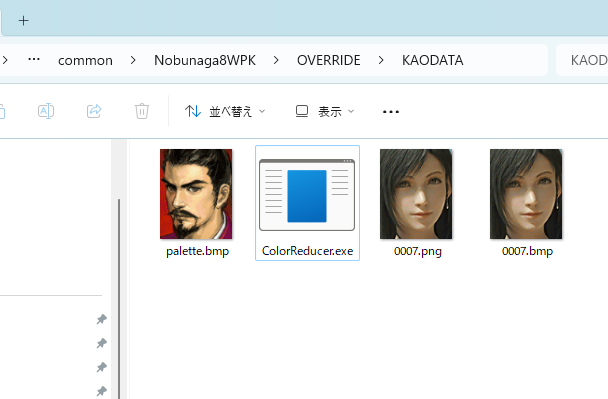

OVERRIDE/KAODATA/0000.bmp ～ 1676.bmp
OVERRIDE/HIMEDATA/0000.bmp ～ 0063.bmp
KaoData.nb8 や HimeData.nb8 に顔グラがあります、これを直接編集して、「OVERRIDE/KaoData.nb8」や「OVERRIDE/HimeData.nb8」として配置することにも
もちろん対応はしていますが、
そのような方法では「受け渡し」には便利かもしれませんが、実際に自分で顔グラを入れ替える、という意味では
何がどう入れ替わったのか管理しにくいので不便でしょう。
現代の画像編集アプリケーションは、Photoshop、あるいは、Gimpなどが中心ですが、
いずれも、「BMPファイル」は扱いにくくなっています。
基本的に「１枚のベタ画像」あるいは「アルファがあるベタ画像」の両方とも、「PNG形式」で扱うのが標準となっています。
OptPixを所持している人は、ここを読む必要はありません。次のパレットの項目に進んでください。
これは、もともとは、iZYINS というプログラムで、「xPadie」や「Yukari」の元となるアルゴリズムと同じ減色アルゴリズムを持ったものです。
それをModで使いやすいように、「*.png」があれば、それを一括で減色して「*.bmp」する、という機能を付け加えたものとなります。
烈風伝では、全ての顔で共通の「固定256色パレット」での減色となるため、多少は粗が出ます。
